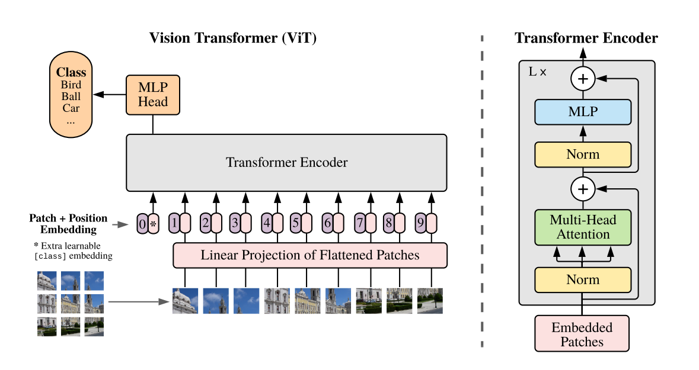

This blog is the beginning of some truly exciting times - want to know why?
In this blog post, we would not only be looking at the architectures in detail, but we will also understand how they are implemented in timm, thus, looking at the code implementation too!
And also please welcome Dr Habib Bukhari! You might know of him as DrHB on Kaggle - at the time of writing, ranked 186/154,204 on the Kaggle ranking system! I am sure we all knew that he is great at deep learning but did you also know that he can also do some kickass visualizations to explain complicated concepts easily? And that, we have decided to team up for this and many more future blog posts to explain the concepts in an easy and visual manner. Together, we hope that you like what you read and see! Much effort and planning has gone into writing this blog post.
So, let’s get started! This blog post has been structured in the following way:
- TOC {:toc}
1 Prerequisite
In this blog post, I assume that the reader knows about the Transformer Architecture. While it will be introduced briefly as part of this post, our main focus will on understanding how the authors of An Image is Worth 16x16 Words: Transformers for Image Recognition at Scale from Google Brain applied the Transformer Architecture to computer vision.
Here are some of my personal favourite resources on Transformers: 1. The illustrated Transformer by Jay Alammar 2. The Annotated Transformer by Harvard NLP 3. Introduction to the Transformer by Rachel Thomas and Jeremy Howard
Though the next one is a biased recommendation, I would also like to recommend the reader to my previous post The Annotated GPT-2, for further reading on Transformers.
2 Introduction
At the time of release, the An Image is Worth 16x16 Words: Transformers for Image Recognition at Scale received quite a bit of “attention” from the community. This was the first paper to get some astonishing results on the ImageNet dataset using the Transformer architecture. While there had been attempts made in the past to apply Transformers in the context of image processing (1, 2, 3), this paper was one of the first to apply Transformers to full-sized images.
NOTE: I will be using the terms Vision Transformer & ViT interchangeably throughout this blog post and both refer to architecture described in An Image is Worth 16x16 Words: Transformers for Image Recognition at Scale paper.
3 Key Contributions
The key contributions from this paper were not in terms of a new architecture, but rather the application of an existing architecture (Transformers), to the field of Computer Vision. It is the training method and the dataset used to pretrain the network, that were key for ViT to get excellent results compared to SOTA (State of the Art) on ImageNet.
So, there aren’t a lot of new things to introduce in this post, but rather how to use the existing Transformer architecutre and apply it to Computer Vision. Thus, if the reader knows about Transformers, this blog post and the research paper itself should be a fairly simple read.
4 The Vision Transformer
We will be using a top down approach to understand the Visual Transformer architecture. We will first start by looking at the overall architecture and then dig deeper into each of the five steps in the overall architecture.
As an overall method, from the paper: > We split an image into fixed-size patches, linearly embed each of them, add position embeddings, and feed the resulting sequence of vectors to a standard Transformer encoder. In order to perform classification, we use the standard approach of adding an extra learnable “classification token” to the sequence. The illustration of the Transformer encoder was inspired by Vaswani et al. (2017)

The overall architecture can be described easily in five simple steps below: 1. Split an input image into patches. 2. Get linear embeddings (representation) from each patch referred to as Patch Embeddings. 3. Add position embeddings and a [cls] token to each of the Patch Embeddings. 4. Pass through a Transformer Encoder and get the output values for each of the [cls] tokens. 5. Pass the representations of [cls] tokens through a MLP Head to get final class predictions.
Note that there is a
MLPinside the Transformer Encoder and aMLP Headthat gives the class predictions, these two are different.
Not as descriptive? Enter Dr Habib to the rescue.

Let’s now look at the five steps again with the help of fig-2. Let’s imagine that we want to classify a 3 channel (RGB) input image of a frog of size 224 x 224.
The first step is to create patches all over the image of patch size 16 x 16. Thus we create 14 x 14 or 196 such patches. We can have these patches in a straight line as in fig-2 where the first patch comes from the top-left of the input image and the last patch comes from the bottom-right. As can be seen from the figure, the patch size is 3 x 16 x 16 where 3 represents the number of channels (RGB).
In the second step, we pass these patches through a linear projection layer to get 1 x 768 long vector representation for each of the image patches and these representations have been shown in purple in the figure. In the paper, the authors refer to these representations of the patches as Patch Embeddings. Can you guess what’s the size of this patch embedding matrix? It’s 196 x 768. Because we had a total of 196 patches and each patch has been represented as a 1 x 768 long vector. Therefore, the total size of the patch embedding matrix is 196 x 768.
You might wonder why is the vector length
768? Well,3 x 16 x 16 = 768. So, we are not really losing any information as step of this process of getting these patch embeddings.
In the third step, we take this patch embedding matrix of size 196 x 768 and similar to BERT, the authors prepend a [cls] token to this sequence of embedded patches and then add Position Embeddings. As can be seen from fig-2, the size of the Patch Embeddings becomes 197 x 768 after adding the [cls] token and also the size of the Position Embeddings is 197 x 768.
Why do we add this class token and position embeddings? You will find a detailed answer in the original Transformer and Bert papers, but to answer briefly, the
[class]tokens are added as a special tokens whose outputs from theTransformer Encoderserve as the overall image patch representation. And we add the positional embeddings to retain the positional information of the patches. The Transformer model on it’s own does not know about the order of the patches unlike CNNs, thus we need to manually inject some information about the relative or absolute position of the patches.
In the fourth step, we pass these preprocessed patch embeddings with positional information and prepended [cls] token to the Transformer Encoder and get the learned representations of the [cls] token. Thus, the output frpm the Transformer Encoder would be of size 1 x 768 which is then fed to the MLP Head (which is nothing but a Linear Layer) as part of the final fifth step to get class predictions.
Having looked at the overall architecture, we will now look at the individual steps in detail in the following sections.
5 Patch Embeddings
In this section we will be looking at steps one and two in detail. That is the process of getting patch embeddings from an input image.
So far in the blog post I have mentioned that the way we get patch embeddings from an input image is to first split an image into fixed-size patches and then linearly embed each one of them using a linear projection layer as shown in fig-2.
But, it is actually possible to combine both steps into a single step using 2D Convolution operation. It is also better from an implementation perspective to do it this way as our GPUs are optimized to perform the convolution operation and it takes away the need to first split an image into patches. Let’s see why this works?
If we set the the number of out_channels to 768, and both kernel_size & stride to 16, then as shown in fig-3, once we perform the convolution operation (where the 2-D Convolution has kernel size 3 x 16 x 16), we can get the Patch Embeddings matrix of size 196 x 768 like below:
# input image `B, C, H, W`
x = torch.randn(1, 3, 224, 224)
# 2D conv
conv = nn.Conv2d(3, 768, 16, 16)
conv(x).reshape(-1, 196).transpose(0,1).shape
>> torch.Size([196, 768])6 [cls] token & Position Embeddings
In this section, let’s look at the third step in more detail. In this step, we prepend [cls] tokens and add Positional Embeddings to the Patch Embeddings.
From the paper: > Similar to BERT’s [class] token, we prepend a learnable embedding to the sequence of embedded patches, whose state at the output of the Transformer encoder (referred to as ZL0) serves as the image representation. Both during pre-training and fine-tuning, a classification head is attached to ZL0.
Position embeddings are also added to the patch embeddings to retain positional information. We use standard learnable 1D position embeddings and the resulting sequence of embedding vectors serves as input to the encoder.
This process can be easily visualized as below:

As can be seen from fig-4, the [cls] token is a vector of size 1 x 768. We prepend it to the Patch Embeddings, thus, the updated size of Patch Embeddings becomes 197 x 768.
Next, we add Positional Embeddings of size 197 x 768 to the Patch Embeddings with [cls] token to get combined embeddings which are then fed to the Transformer Encoder. This is a pretty standard step that comes from the original Transformer paper - Attention is all you need.
Note that the Positional Embeddings and
clstoken vector is nothing fancy but rather just a trainablenn.Parametermatrix/vector.
7 The Transformer Encoder
This section of the blog post is not specific to Vision Transformers but a repeat of the Transformer Architecture and covers step-4. If you already know of the Transformer Architectures, then, feel free to skip this section. If you are not aware of the Transformer Architecture, then I recommend you to go through any of the resources mentioned in the Prerequisite section of this blog post.
In this section, we will be looking into the Transformer Encoder from fig-1 in detail. As shown in fig-1, the Transformer Encoder consists of alternating layers of Multi-Head Attention and MLP blocks. Also, as shown in fig-1, Layer Norm is used before every block and residual connections after every block.
A single layer/block of the Transformer Encoder can be visualized as below:

The first layer of the Transformer Encoder accepts combined embeddings of shape197 x 768 as input. For all subsequent layers, the inputs are the outputs Out matrix of shape 197 x 768 from the previous layer of the Transformer Encoder. There are a total of 12 such layers in the Transformer Encoder of the ViT-Base architecture.
Inside the layer, the inputs are first passed through a Layer Norm, and then fed to Multi-Head Attention block.
Inside the Multi-Head Attention, the inputs are first converted to 197 x 2304 (768*3) shape using a Linear layer to get the qkv matrix. Next we reshape this qkv matrix into 197 x 3 x 768 where each of the three matrices of shape 197 x 768 represent the q, k and v matrices. These q, k and v matrices are further reshaped to 12 x 197 x 64 to represent the 12 attention heads. Once we have the q, k and v matrices, we finally perform the attention operation inside the Multi-Head Attention block which is given by the equation:

Once we get the outputs from the Multi-Head Attention block, these are added to the inputs (skip connection) to get the final outouts that again get passed to Layer Norm before being fed to the MLP Block.
The MLP, is a Multi-Layer Perceptron block consists of two linear layers and a GELU non-linearity. The outputs from the MLP block are again added to the inputs (skip connection) to get the final output from one layer of the Transformer Encoder.
Having looked at a single layer inside the Transformer Encoder, let’s now zoom out and look at the complete Transformer Encoder.

As can be seen from the image above, a single Transformer Encoder consists of 12 layers. The outputs from the first layer are fed to the second layer, outputs from the second fed to the third until we get the final outputs from the 12th layer of the Transformer Encoder which are then fed to the MLP Head to get class predictions. The above image is another way to summarize fig-1.
8 The Vision Transformer in PyTorch
Having understood the Vision Transformer Architecture in great detail, let’s now look at the code-implementation and understand how to implement this architecture in PyTorch. We will be referencing the code from timm to explain the implementation. The code below has been directly copied from here.
We will build Vision Transformer using a bottom-up approach. We will take what we have learnt so far and start implementing the overall architecture piece-by-piece. First things first, how do get Patch Embeddings?
class PatchEmbed(nn.Module):
""" Image to Patch Embedding
"""
def __init__(self, img_size=224, patch_size=16, in_chans=3, embed_dim=768):
super().__init__()
img_size = to_2tuple(img_size)
patch_size = to_2tuple(patch_size)
num_patches = (img_size[1] // patch_size[1]) * (img_size[0] // patch_size[0])
self.img_size = img_size
self.patch_size = patch_size
self.num_patches = num_patches
self.proj = nn.Conv2d(in_chans, embed_dim, kernel_size=patch_size, stride=patch_size)
def forward(self, x):
B, C, H, W = x.shape
assert H == self.img_size[0] and W == self.img_size[1], \
f"Input image size ({H}*{W}) doesn't match model ({self.img_size[0]}*{self.img_size[1]})."
x = self.proj(x).flatten(2).transpose(1, 2)
return xAs we know, we use a 2-D Convolution where stride, kernel_size are set to patch_size. Thus, that is exactly what the class above does. We set self.proj to be a nn.Conv2d which goes from 3-channels to 768 and to get 196 x 768 patch embedding matrix.
patch_embed = PatchEmbed()
x = torch.randn(1, 3, 224, 224)
patch_embed(x).shape
>> torch.Size([1, 196, 768])Okay, so that’s that. It is also pretty easy to implement the MLP Block inside the Transformer Encoder below:
class Mlp(nn.Module):
def __init__(self, in_features, hidden_features=None, out_features=None, act_layer=nn.GELU, drop=0.):
super().__init__()
out_features = out_features or in_features
hidden_features = hidden_features or in_features
self.fc1 = nn.Linear(in_features, hidden_features)
self.act = act_layer()
self.fc2 = nn.Linear(hidden_features, out_features)
self.drop = nn.Dropout(drop)
def forward(self, x):
x = self.fc1(x)
x = self.act(x)
x = self.drop(x)
x = self.fc2(x)
x = self.drop(x)
return xBasically, it consists of two layers and a GELU activation layer. There isn’t a lot happening in this class and is pretty easy to implement. Next, we implement Attention as below:
class Attention(nn.Module):
def __init__(self, dim, num_heads=8, qkv_bias=False, qk_scale=None, attn_drop=0., proj_drop=0.):
super().__init__()
self.num_heads = num_heads
head_dim = dim // num_heads
# NOTE scale factor was wrong in my original version, can set manually to be compat with prev weights
self.scale = qk_scale or head_dim ** -0.5
self.qkv = nn.Linear(dim, dim * 3, bias=qkv_bias)
self.attn_drop = nn.Dropout(attn_drop)
self.proj = nn.Linear(dim, dim)
self.proj_drop = nn.Dropout(proj_drop)
def forward(self, x):
B, N, C = x.shape
qkv = self.qkv(x).reshape(B, N, 3, self.num_heads, C // self.num_heads).permute(2, 0, 3, 1, 4)
q, k, v = qkv[0], qkv[1], qkv[2] # make torchscript happy (cannot use tensor as tuple)
attn = (q @ k.transpose(-2, -1)) * self.scale
attn = attn.softmax(dim=-1)
attn = self.attn_drop(attn)
x = (attn @ v).transpose(1, 2).reshape(B, N, C)
x = self.proj(x)
x = self.proj_drop(x)
return xAs described inside the Multi-Head Attention block, we use a Linear layer to get the qkv matrix. Also, we apply the attention operation inside the forward method above like so:
attn = (q @ k.transpose(-2, -1)) * self.scale
attn = attn.softmax(dim=-1)The above code implements eq-1. Since we have already implemented the Attention Layer and MLP block, let’s quickly implement a single layer of the Transformer Encoder. As we already know from fig-5, a single Block consists of Layer Norm, Attention and MLP block.
class Block(nn.Module):
def __init__(self, dim, num_heads, mlp_ratio=4., qkv_bias=False, qk_scale=None, drop=0., attn_drop=0.,
drop_path=0., act_layer=nn.GELU, norm_layer=nn.LayerNorm):
super().__init__()
self.norm1 = norm_layer(dim)
self.attn = Attention(
dim, num_heads=num_heads, qkv_bias=qkv_bias, qk_scale=qk_scale, attn_drop=attn_drop, proj_drop=drop)
# NOTE: drop path for stochastic depth, we shall see if this is better than dropout here
self.drop_path = DropPath(drop_path) if drop_path > 0. else nn.Identity()
self.norm2 = norm_layer(dim)
mlp_hidden_dim = int(dim * mlp_ratio)
self.mlp = Mlp(in_features=dim, hidden_features=mlp_hidden_dim, act_layer=act_layer, drop=drop)
def forward(self, x):
x = x + self.drop_path(self.attn(self.norm1(x)))
x = x + self.drop_path(self.mlp(self.norm2(x)))
return xAs can be seen in the forward method above, this Block accepts inputs x, passes them through self.norm1 which is LayerNorm followed by the attention operation. Next, we normalize the output after the attention operation again before passing through self.mlp followed by Dropout to get the outputs Out matrix from this single block as in fig-5.
Now that we have all the pieces, the complete architecture for the Vision Transformer can be implemented below like so:
class VisionTransformer(nn.Module):
""" Vision Transformer with support for patch or hybrid CNN input stage
"""
def __init__(self, img_size=224, patch_size=16, in_chans=3, num_classes=1000, embed_dim=768, depth=12,
num_heads=12, mlp_ratio=4., qkv_bias=False, qk_scale=None, drop_rate=0., attn_drop_rate=0.,
drop_path_rate=0., norm_layer=nn.LayerNorm):
super().__init__()
self.num_classes = num_classes
self.num_features = self.embed_dim = embed_dim # num_features for consistency with other models
self.patch_embed = PatchEmbed(
img_size=img_size, patch_size=patch_size, in_chans=in_chans, embed_dim=embed_dim)
num_patches = self.patch_embed.num_patches
self.cls_token = nn.Parameter(torch.zeros(1, 1, embed_dim))
self.pos_embed = nn.Parameter(torch.zeros(1, num_patches + 1, embed_dim))
self.pos_drop = nn.Dropout(p=drop_rate)
dpr = [x.item() for x in torch.linspace(0, drop_path_rate, depth)] # stochastic depth decay rule
self.blocks = nn.ModuleList([
Block(
dim=embed_dim, num_heads=num_heads, mlp_ratio=mlp_ratio, qkv_bias=qkv_bias, qk_scale=qk_scale,
drop=drop_rate, attn_drop=attn_drop_rate, drop_path=dpr[i], norm_layer=norm_layer)
for i in range(depth)])
self.norm = norm_layer(embed_dim)
# Classifier head
self.head = nn.Linear(embed_dim, num_classes) if num_classes > 0 else nn.Identity()
def forward_features(self, x):
B = x.shape[0]
x = self.patch_embed(x)
cls_tokens = self.cls_token.expand(B, -1, -1)
x = torch.cat((cls_tokens, x), dim=1)
x = x + self.pos_embed
x = self.pos_drop(x)
for blk in self.blocks:
x = blk(x)
x = self.norm(x)
return x[:, 0]
def forward(self, x):
x = self.forward_features(x)
x = self.head(x)
return xI leave it as an exercise to the reader to understand the implementation of the Vision Transformer. It merely brings all the pieces together and performs the steps as described in fig-2.
9 Conclusion
I hope that through this blog, both Dr Habib and I have been able to explain all the magic that goes on inside the Vision Transformer Architecture.
Once again, thanks to Dr Habib, I have been able to reference his beautiful and simplistic visualizations to explain each step in detail.
As usual, in case we have missed anything or to provide feedback, please feel free to reach out to me at @amaarora or Dr Habib at @dr_hb_ai.
Also, feel free to subscribe to my blog here to receive regular updates regarding new blog posts. Thanks for reading!